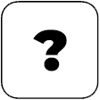

- El objetivo del juego es acumular la mayor cantidad de puntos posible en 15 rondas.
- En cada ronda, los jugadores se turnan para tirar los dados. Cada jugador tira ambos dados en su turno.
- Los puntos se suman de la siguiente manera: La suma de los valores de ambos dados es la cantidad de puntos ganados en esa ronda. Por ejemplo, si un jugador tira un dado y obtiene un 3 y el otro dado un 4, suma 3 + 4 = 7 puntos en esa ronda.
- Si un jugador tira el dado y este sale el número 6, se le otorga una bonificación de 3 puntos extras pero si saca un 1 se le restan 3 puntos.
- Los jugadores alternan sus turnos en cada ronda, comenzando con el jugador 1 en la primera ronda y luego alternando en cada ronda subsiguiente.
- Después de 10 rondas, se suman los puntos acumulados por cada jugador a lo largo del juego.
- El jugador con la puntuación total más alta al final de las 10 rondas gana el juego.
Jugador 1
Jugador 2
